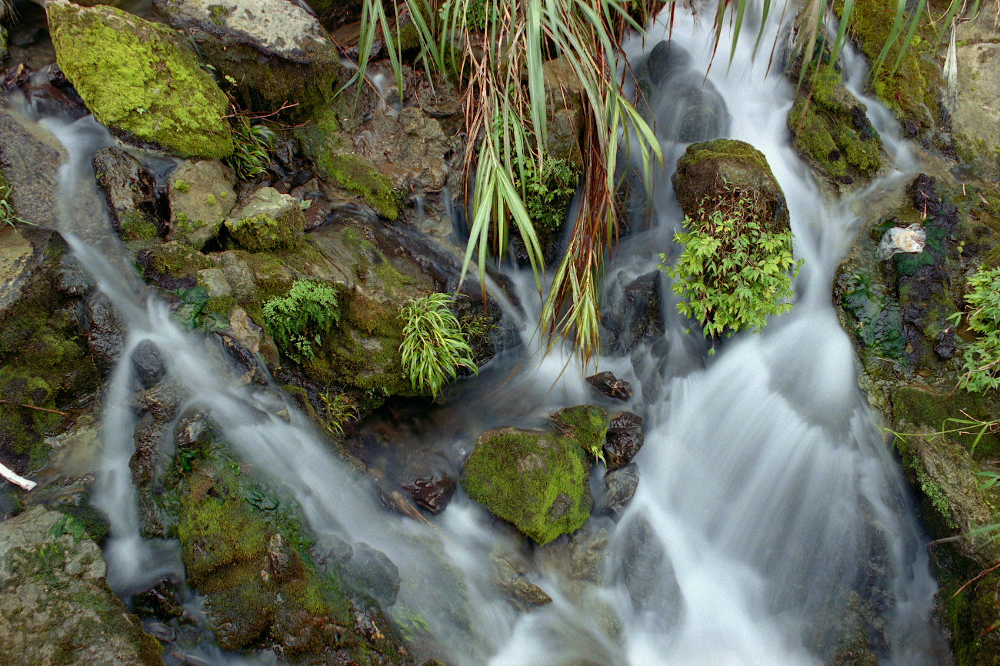
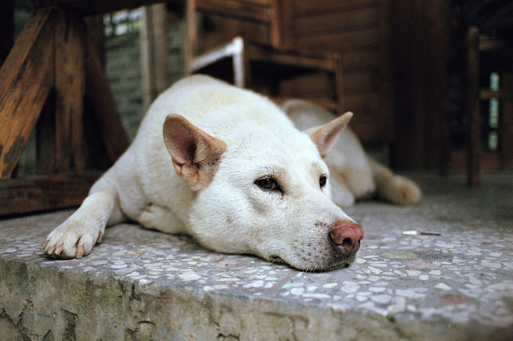
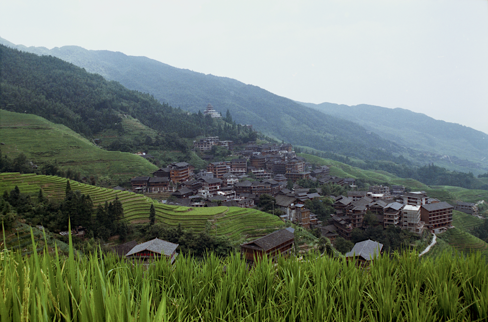
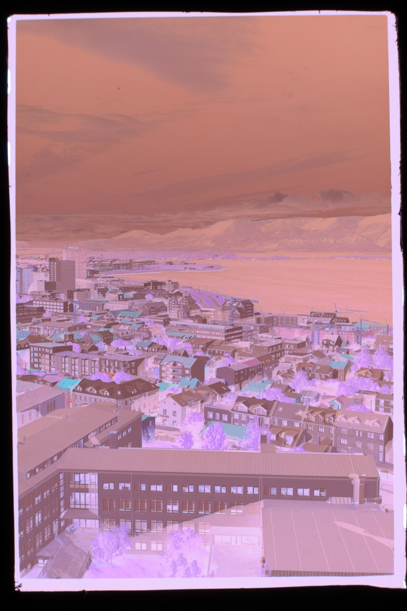
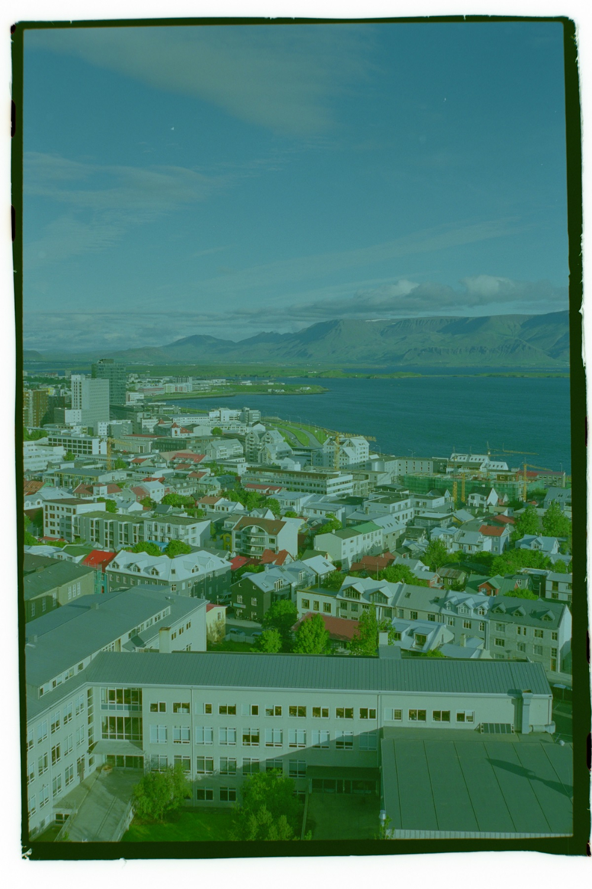
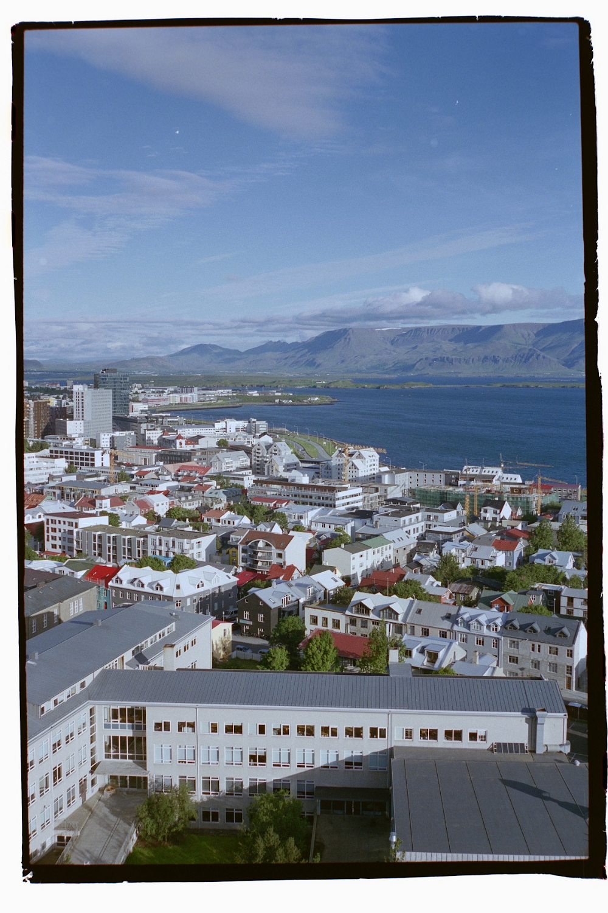
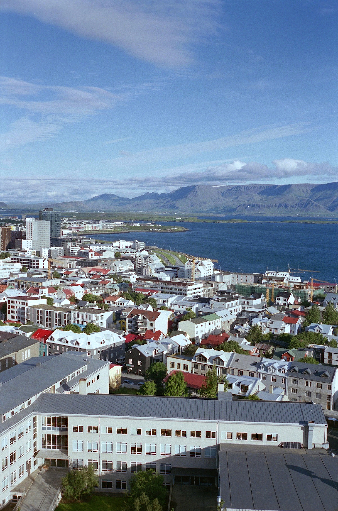

trevor li photography
home | archive | gear
| about me

Nikon FE | Nikkor 28mm f2.8 | Fuji Superia 400

Nikon FE | Nikkor 28mm f2.8 | Fuji Superia 400

Nikon FE | Nikkor 28mm f2.8 | Fuji Superia 400
Hello world!
This first post marks the beginning of my website and it will be largely about my technique with processing film negatives. In the next post/article, I'll share some photos from my trip to Iceland in 2018 as well as photos from my trip to China over the summer. The three photos above are from a roll of Fuji Superia 400 that I shot during my trip to China. These three in particular were three consecutive ones that I took near Guilin.
Without further ado, here's how I post-process photos that I take on 35mm film; it's a fairly complicated process that's all based around getting a good scan from my DSLR. Below are a series of photos that shows the major steps that I take. Most people would use a flatbed scanner or even a dedicated film scanner but I made myself a scanning rig that can be attached to the front of a macro lens. To light up the negative, I simply used the screen of my Samsung S8 at full brightness and a pure white image. Because the AMOLED screen has a fairly wide colour gamut, it allows me to get really accurate colours from the film negative.
Ultimately, the image quality and value is far better than if I were to spend $500 on a mid-range flatbed scanner such as the popular Epson V600. A trick I use to get insane image quality through DSLR scanning consists of stacking multiple photos of the same negative and stitching them together to effectively get 80+ megapixel scans from a 24 megapixel sensor. It's a labour intensive process and is only worth it with certain types of film that have high enough resolution. (E.g. Kodak Ektachrome, Fujifilm Provia, or other slide films.) You can see this trick in action at the bottom of this post.

Step one: Scan negatives after getting them back from the film lab. This is how it looks straight out of my DSLR with no editing. Aside from the fact the colours are inverted, the entire image is also shifted towards magenta because the film base itself has a tint to it.

Step two: Invert negative. As you can tell, there are serious colour casts that need to corrected alongside exposure.

Step three: Colour grading. This is by far the hardest and most tedious part of the whole process; you really need to imagine how the colours supposed to look like and adjust based on what you think looks best. After this is completed, the photo gets converted from a .RAW file to a .JPEG file.
The reason why I always start with a .RAW file is because of its incredible versatility. You can really push the colours, shawdows, and highlights around with a .RAW file without any noticeable drawbacks because a .RAW file holds a lot more data. If I were to do such extreme colour corrections with a .JPG instead, limitations (such as increased noise, clipped highlights/shadows) would start to show up.

Step four: Finally, I open the image in GIMP and do any final adjustments by tinkering with the RGB and luminance curves until I feel that all the colours look as good as possible. It's also at this point that I remove any dust, straighten, crop, resize, and sharpen the photo.
 Left: 100% crop of a scan created from a single exposure. Right: 100% crop of a scan created from 4 exposures stitched together. This technique would have worked even better if I used a professional film instead of Fuji Superia 400 (a consumer-grade film) to make the initial exposure.
Left: 100% crop of a scan created from a single exposure. Right: 100% crop of a scan created from 4 exposures stitched together. This technique would have worked even better if I used a professional film instead of Fuji Superia 400 (a consumer-grade film) to make the initial exposure.
Return to the top of the page.
© Trevor Li 2019, all rights reserved. All images taken by Trevor Li unless noted.